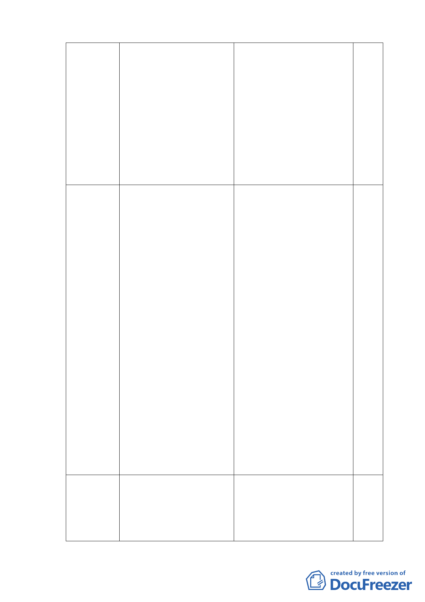

宜更動而影響本案推動之
必要性，故本案是否仍擬
變更土地使用，尚請 貴局
妥 為 考 量 」。 民 政 局
96.5.2 函覆發展局略以
「本局於 96.4.20 簽奉
市長裁示，另案將召集專
案會議討論，在未有妥善
方案前，暫不宜撤案」。
96.3.21
函請市府都市發展局、都市 一、都市發展局 96.4.2 函覆：
更新處，儘速提送修正補充
本府民政局刻正簽報檢
資料到會，俾續召開會議審
討，將儘速檢送市府核定
議。
結果及相關資料提會報
告。
二、都市發展局於 96.5.31 及
96.6.27 陸 續 召 開 二 次
「孔廟東側住宅更新研商
會議」結論略以「本案以
不徵收、不影響居民權
益，並由本府協助辦理都
市更新為原則，後續不再
召開研商會議，請更新處
於處理方案修正完竣後再
行簽報，並與孔廟管理委
員會、詹建築師及相關局
處討論，以利向副市長報
告」。
97.11.11
函請市府都市發展局、民政 都市發展局 97.12.16 函覆：因
局、文化局，儘速提送補充 孔廟東側住宅將以結合都市計
資料到會，俾續召開會議審 畫與都市更新方式辦理，現由
議 本市都市更新處簽辦都市更
-5-